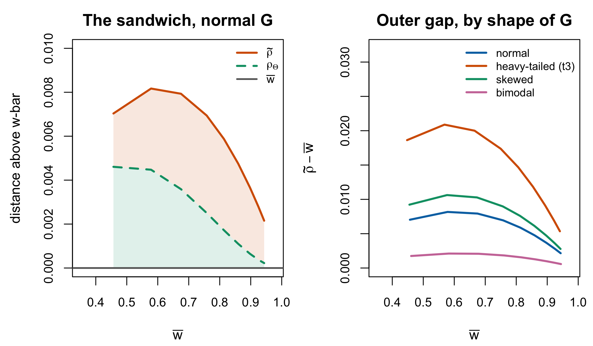

| Coefficient | True variance is | Formula | Scale | Read from |
|---|---|---|---|---|
| \(\bar w\) (this programme) | assumed known (\(\sigma^2_\theta\), set by design) | \(\sigma^2_\theta/(\sigma^2_\theta+\mathrm{MSEM})\) | latent | manuscript sec. 2.1 |
| Person-separation reliability | \(\operatorname{Var}(\hat\theta) - \mathrm{MSEM}\) (subtracted) | \(1-\mathrm{MSEM}/\operatorname{Var}(\hat\theta)\) | latent | TAM::WLErel; mirt::empirical_rxx(T_as_X = TRUE) |
| EAP reliability | \(\operatorname{Var}(\hat\theta)\) itself (estimates are shrunk) | \(\operatorname{Var}(\hat\theta)/(\operatorname{Var}(\hat\theta)+\bar\sigma^2_{\text{post}})\) | latent | mirt::empirical_rxx (default) |
| Marginal reliability \(\rho_\Theta\) (standard; mirt caveat) | \(\sigma^2_\theta\), pointwise | \(\operatorname{E}_G[\sigma^2_\theta\mathcal{J}/(\sigma^2_\theta\mathcal{J}+1)]\); mirt computes \(\operatorname{E}_G[\mathcal{J}/(\mathcal{J}+\sigma^2_\theta)]\) | latent | Andersson & Xin (2018, eq. 13), scale-adapted; mirt::marginal_rxx agrees only at \(\sigma^2_\theta=1\) |
| Average-information \(\tilde\rho\) | \(\sigma^2_\theta\) | \(\sigma^2_\theta\bar{\mathcal{J}}/(\sigma^2_\theta\bar{\mathcal{J}}+1)\) | latent | IRTsimrel::compute_rho_tilde |
| Coefficient \(\alpha\) | not identified; bounded | \(\frac{n}{n-1}(1-\sum_i V_i/V_t)\) | sum score | Cronbach (1951) |
| Guttman’s \(\lambda_2\) | not identified; bounded | lower bound using squared covariances | sum score | Guttman (1945, sec. 13) |
8 Reliability in the Rasch Model
Chapter 1 asserted that “reliability below 0.7” is not interpretable until three further questions are answered: reliability of what, computed how, and a property of what. This chapter answers them. It is the longest chapter in Part III because the answers are not difficult but are routinely skipped, and because the whole simulation design in the companion book rests on treating one particular coefficient as a design factor.
The organizing fact is Equation 1.1: every coefficient in circulation is the same ratio, of variance attributable to true differences between persons to that variance plus measurement error variance. They differ in how the two terms are obtained. Once that is said clearly, most of the confusion in the area dissolves, and what remains — a genuine ordering among three population functionals, and a genuine ambiguity about whether \(\sigma^2_\theta\) is estimated or set — becomes visible.
8.1 The classical ratio
Classical test theory writes an observed score as a true score plus error,
\[ X = T + E, \qquad \operatorname{cov}(T, E) = 0, \qquad \operatorname{E}(E) = 0, \tag{8.1}\]
from which reliability is
\[ \rho_{XX'} = \frac{\operatorname{Var}(T)}{\operatorname{Var}(X)} = \frac{\operatorname{Var}(T)}{\operatorname{Var}(T) + \operatorname{Var}(E)} . \tag{8.2}\]
The definition is Spearman’s: he observed in 1904 that measurement error attenuates observed relationships, and introduced the term reliability coefficient in 1910, as Adams (2005) recounts. Equation 8.2 reappears in enough different guises that its ubiquity is easy to mistake for depth. Adams lists five: the correlation between true and observed scores is \(\sqrt{\rho_{XX'}}\); the correlation between two parallel observed scores is \(\rho_{XX'}\); a correlation with an external variable is attenuated by \(\sqrt{\rho_{XX'}}\); the variance of the observed mean as an estimator of the true mean is inflated by \(1/\rho_{XX'}\); and \(\operatorname{Var}(T) = \operatorname{Var}(X)\rho_{XX'}\) tautologically.
The fourth is the one Section 8.3 returns to.
\(\operatorname{Var}(T)\) is not observable, so classical coefficients bound it rather than estimate it. Coefficient \(\alpha\) (Cronbach 1951),
\[ \alpha = \frac{n}{n-1}\left(1 - \frac{\sum_i V_i}{V_t}\right), \tag{8.3}\]
with \(V_i\) the item variances and \(V_t\) the total-score variance, is a lower bound on \(\rho_{XX'}\) under any model — a result van der Ark (2025, 1679) attributes to Lord and Novick (1968, Theorem 4.4.3). Guttman’s \(\lambda_2\) (Guttman 1945, sec. 13) is a sharper lower bound using the squared inter-item covariances, and Guttman’s \(\lambda_3\) is \(\alpha\) (Ark 2025, 1686, § 3.7). Three things follow that are worth saying flatly, because each is regularly got wrong: \(\alpha\) is a bound and not an estimate; it is a statement about the sum score and not about a latent variable; and it is not a measure of unidimensionality (Sijtsma 2009).
8.2 The IRT reliability zoo
Table 8.1 lays out the coefficients that compete for the name in item response theory. It is not an inventory for its own sake. Read down the second column and the structure of the field appears: what separates these coefficients is almost entirely where the true variance comes from.
Three routes are available, and an estimator determines which one is correct.
Subtraction. ML and WLE estimates carry measurement error on top of true variation, so their variance is inflated. Under the assumptions of Equation 8.1 applied to \(\hat\theta_p = \theta_p + \varepsilon_p\), Adams (2005, eq. 5) gives
\[ \operatorname{Var}(\hat\theta) = \sigma^2_\theta + \mathrm{MSEM}, \tag{8.4}\]
so the true variance is recovered by subtracting, and reliability is
\[ 1 - \frac{\mathrm{MSEM}}{\operatorname{Var}(\hat\theta)} . \tag{8.5}\]
This is the person-separation reliability of Wright and Stone (1979) as Adams (2005, eq. 6) presents it, and it is exactly what TAM::WLErel computes.
Addition. EAP estimates are shrunk toward the prior mean and their variance is deflated. The identity \(\operatorname{Var}(\theta) = \operatorname{Var}[\operatorname{E} (\theta \mid \mathbf{u})] + \operatorname{E}[\operatorname{Var}(\theta \mid \mathbf{u})]\) — which Adams attributes to Verhelst (2001) in this use — gives
\[ \sigma^2_\theta = \operatorname{Var}(\hat\theta^{\mathrm{EAP}}) + \bar\sigma^2_{\text{post}}, \tag{8.6}\]
so the true variance is recovered by adding the mean posterior variance, and reliability is
\[ \frac{\operatorname{Var}(\hat\theta^{\mathrm{EAP}})} {\operatorname{Var}(\hat\theta^{\mathrm{EAP}}) + \bar\sigma^2_{\text{post}}} . \tag{8.7}\]
Adams remarks that Equation 8.7 is “in some sense the reciprocal” of Equation 8.5, and that is the whole of it: the two formulas are the same operation performed on opposite sides of an over- or under-dispersed estimate.
Assumption. The third route is the manuscript’s, and the simulation’s. \(\sigma^2_\theta\) is neither subtracted nor added; it is known, because the design set it. That is Section 8.4.1.
ImportantThe two formulas are one function argument apart, and are not interchangeable
mirt::empirical_rxx computes Equation 8.7 by default and Equation 8.5 when T_as_X = TRUE. Nothing in the call checks which estimator produced the scores.
For any \(\mathrm{MSEM} = m > 0\) and any \(\operatorname{Var}(\hat\theta) = v > m\),
\[ \frac{v}{v+m} \;-\; \left(1 - \frac{m}{v}\right) \;=\; \frac{m^2}{v(v+m)} \;>\; 0 , \tag{8.8}\]
so Equation 8.7 always returns the larger number. Applying it to ML or WLE scores therefore overstates reliability, and by Equation 8.4 the overstatement is systematic rather than incidental. The exact algebra above is the claim used here; a numerical simulation comparison belongs with the companion book’s reproducible experiments.
8.2.1 When reliability comes out negative
Equation 8.5 is negative exactly when \(\mathrm{MSEM} > \operatorname{Var} (\hat\theta)\): when the average error variance exceeds the observed spread of the estimates. This is not a numerical pathology and not a bug in the software. It is what subtraction does when the design is too weak for the population — few items, a homogeneous sample, floor or ceiling effects — and Equation 8.4 is violated in sample because the sampling error in \(\operatorname{Var}(\hat\theta)\) swamps \(\sigma^2_\theta\). A negative value carries information: it says the data cannot distinguish between-person differences from noise at all.
Two consequences. First, Equation 8.7 cannot go negative, since it is a ratio of non-negative quantities, so the choice of formula changes not only the value but the range. Second — and this is the point that returns in Section 8.4.1 — a simulation that fixes \(\sigma^2_\theta = 1\) can never produce a negative reliability, because it never subtracts. The phenomenon is invisible by construction to the design that is supposed to be studying reliability.
8.3 Reliability is a property of a test in a population
Equation 8.2 has a numerator that belongs to the persons and a denominator that belongs to the persons and the instrument together. Adams (2005) puts the consequence plainly: reliability is a characteristic of both the instrument and the sample it is applied to, so a very homogeneous sample yields low reliability regardless of instrument quality, and a very heterogeneous one can make an inaccurate instrument look reliable.
This is why the phrase “the reliability of the instrument” is a category error, and it is also the licence for everything the companion simulation does. If reliability were a property of a test, varying it as a design factor would be varying the test. Because it is a property of a test-in-a-population, it can be varied by moving either side, and Chapter 9 shows which side the manuscript moved.
Adams’s larger point is that in large-scale survey work the useful reading of reliability is its reciprocal, which he names the measurement design effect: the factor by which not observing true abilities inflates the sampling variance of a population estimate. For the mean, that factor is exactly \(1/\rho\), from the fourth of the five equivalences in Section 8.1. Two features of it matter here. It varies by statistic — Adams reports that in PISA 2003 the design effect for country means was mild while the effect for the percentage of students at a proficiency level was far larger, and in two systems it more than doubled the error variance. And it is a statement about population estimands, not individual ones, which is precisely the distinction Part VI is built on.
8.4 Reliability and the mean shrinkage weight
Chapter 1 introduced the shrinkage weight \(w_p = \sigma^2_\theta/(\sigma^2_\theta + \operatorname{se}(\hat\theta_p)^2)\) from Equation 2.2, and the manuscript’s reliability is written \(\bar w\). The overbar invites the reading that \(\bar w\) is the average of the \(w_p\). It is not, except in a special case, and the direction of the error is knowable.
Proposition 8.1 The mean weight exceeds the reliability. Derived here; no originality claim
Let \(s^2_p\) be working conditional variances with \(\mathrm{MSEM} = P^{-1}\sum_p s^2_p\), and let \(w_p = \sigma^2_\theta/(\sigma^2_\theta + s^2_p)\). Then
\[ \frac{1}{P}\sum_{p=1}^{P} w_p \;\ge\; \frac{\sigma^2_\theta}{\sigma^2_\theta + \mathrm{MSEM}} \;=\; \bar w , \tag{8.9}\]
with equality if and only if the \(s^2_p\) are constant across persons.
Proof. \(x \mapsto \sigma^2_\theta/(\sigma^2_\theta + x)\) is convex on \(x > 0\); apply Jensen’s inequality to the empirical distribution of the \(s^2_p\). Strict convexity gives the equality condition. ∎
Two qualifications keep Proposition 8.1 honest. The weights \(w_p\) are those of a normal–normal working approximation: if the person likelihood is approximated locally by \(N(\hat\theta_p, s^2_p)\) and the prior is \(N(\mu_\theta, \sigma^2_\theta)\), the approximate posterior mean is \(w_p\hat\theta_p + (1-w_p)\mu_\theta\). An exact Rasch EAP is a posterior integral with no such closed form, so Proposition 8.1 is an exact statement about the working weights and an approximate one about EAP shrinkage. And the equality condition is not idle: \(\operatorname{se}(\hat\theta_p)\) is constant only if information is constant across the persons measured, which Section 7.1 showed it is not.
The practical reading is that \(\bar w\) is a lower bound on how much weight a shrinkage estimator places on the data, and the gap widens as the error curve spreads. Section 8.6 shows the same mechanism operating one level up, on population functionals rather than person averages, and the two together are the reason this chapter treats Jensen’s inequality as structural rather than as a technicality.
8.4.1 Estimated or set: what \(\sigma^2_\theta\) is
There is a difference between two operations that produce the same symbol.
Wright and Masters (1982, sec. 5.5) obtain the true variance by subtraction: they define the adjusted person variance as \(SA_P^2 = SD_P^2 - MSE_P\), where \(SD_P^2\) is the observed variance of the estimates. The decomposition is therefore an identity by construction and not an approximation — the Appendix C draft’s “\(\approx\)” in its equation (C.13) understates it, and with equality the correspondence to Equation 8.2 is algebraic rather than asymptotic. The simulation, by contrast, obtains \(\sigma^2_\theta\) by construction: it draws \(\theta\) from a distribution with variance one and reads reliability off Equation 8.10 below.
The two operations may target the same population variance under the measurement-error model, but they do not coincide automatically in expectation. The subtraction estimator inherits sampling and plug-in error, whereas the simulation value is fixed by design. Reading a realized \(\bar w\) off a sample of twenty people when \(\sigma^2_\theta\) was set by fiat therefore mixes a design parameter with an estimator, and the mixture is what makes negative reliability impossible in simulation and commonplace in data (Section 8.2.1). The distinction is logged as C-004 and C-005; Chapter 9 shows where it bites in the design table.
With \(\sigma^2_\theta\) known, the population reliability is
\[ \bar w = \frac{\sigma^2_\theta}{\sigma^2_\theta + \mathrm{MSEM}} \;\;\xrightarrow{\;\sigma^2_\theta = 1\;}\;\; \frac{1}{1 + \mathrm{MSEM}} , \tag{8.10}\]
which is the form the manuscript uses and the form Chapter 9 inverts.
8.5 Separation and strata
Reliability on the \([0,1]\) scale compresses badly at the top: the difference between \(0.90\) and \(0.95\) is not perceptible as a number but is a halving of error variance. Wright and Masters give two rescalings that do not compress.
Proposition 8.2 Separation and strata. Restated from Wright and Masters (1982, § 5.5)
The person separation index is the ratio of true spread to measurement error in the same units,
\[ S = \frac{\sigma_\theta}{\mathrm{RMSEM}}, \qquad\text{equivalently}\qquad \bar w = \frac{S^2}{1+S^2}, \tag{8.11}\]
and the number of statistically distinct person strata is
\[ H = \frac{4S+1}{3} . \tag{8.12}\]
Wright and Masters write these as \(G_P = SA_P/SE_P\) and \(H_P = (4G_P+1)/3\).
Equation 8.12 is not arbitrary and its constant is not a fitted one. It follows from a stated convention: two person locations count as distinct when they lie three measurement errors apart, which places stratum centres at \(3\,\mathrm{RMSEM}\) intervals across the functional range of roughly \(\pm 2\sigma_\theta\). That convention is the assumption to argue with, not the algebra. A reader who prefers a two-error criterion gets a different constant and a different count of strata from identical data.
\(S\) has the advantage that it is unbounded and roughly linear in what one cares about: \(\bar w = 0.5\) is \(S = 1\), meaning true spread and error are equal, and \(\bar w = 0.9\) is \(S = 3\).
A defect in the manuscript’s Table 2. The table reports RMSEM, \(S\), \(H\), and test information for five target reliabilities. Three of the four columns are computed from the exact target and reproduce it to the displayed precision. The separation column is not: it is computed from the rounded RMSEM column, and half-up rounding of \(1/\mathrm{RMSEM}_{\text{printed}}\) reproduces the printed \(1.0/1.3/1.4/2.0/3.3\) exactly, where the exact values are \(1.0/1.2/1.5/2.0/3.0\). The printed \(H\) column, computed from the exact \(S\), is internally inconsistent with the printed \(S\) beside it. The manuscript’s own prose settles which is intended: at \(\bar w = 0.9\) it says the between-person SD is about three times RMSEM, which is \(S = 3.0\), not \(3.3\). Logged as C-001, severity minor; the fix is to regenerate the column from the target reliability.
8.6 Three functionals, and the order they come in
Everything above averaged over persons. At the population level the same quantities can be assembled in three different orders, and the literature has settled on all three without much noticing.
Write \(\mathcal{J}(\theta)\) for the test information at \(\theta\) and let \(G\) have variance \(\sigma^2_\theta\). Then:
\[ \bar w = \frac{\sigma^2_\theta}{\sigma^2_\theta + \operatorname{E}_G[\mathcal{J}^{-1}]}, \qquad \rho_\Theta = \operatorname{E}_G\!\left[\frac{\sigma^2_\theta\mathcal{J}} {\sigma^2_\theta\mathcal{J} + 1}\right], \qquad \tilde\rho = \frac{\sigma^2_\theta\operatorname{E}_G[\mathcal{J}]} {\sigma^2_\theta\operatorname{E}_G[\mathcal{J}] + 1} . \tag{8.13}\]
\(\bar w\) averages the error variances and then forms the ratio. \(\rho_\Theta\) forms the ratio pointwise and averages that. Andersson and Xin (2018, eq. 13), following Cheng et al. (2012), state the unit-variance form; the \(\sigma^2_\theta\) form displayed here is its algebraic scale adaptation. mirt::marginal_rxx does not implement this general-variance formula: mirt 1.46.1 evaluates \(\operatorname{E}_G[\mathcal{J}/(\mathcal{J}+\sigma^2_\theta)]\), which agrees with \(\rho_\Theta\) only when \(\sigma^2_\theta=1\). \(\tilde\rho\) averages the information and then forms the ratio; it is the average-information metric that the reliability-targeting package calibrates against.
They are not equal, and they are ordered.
Theorem 8.1 The three functionals are sandwiched. Outer inequality restated from the reliability-targeting package (IRTsimrel, vignettes/theory-reliability.Rmd, Theorem 1); the placement of \(\rho_\Theta\) between the two is derived here
For any \(G\) with \(\sigma^2_\theta > 0\) and any information function with \(\mathcal{J} > 0\) and \(\operatorname{E}_G[\mathcal{J}]\), \(\operatorname{E}_G [\mathcal{J}^{-1}]\) finite,
\[ \bar w \;\le\; \rho_\Theta \;\le\; \tilde\rho , \tag{8.14}\]
with equality throughout if and only if \(\mathcal{J}(\theta)\) is constant \(G\)-almost surely.
Proof. Both steps are Jensen’s inequality on the same function seen from two sides. For the left inequality, \(x \mapsto \sigma^2_\theta/(\sigma^2_\theta + x)\) is strictly convex on \(x > 0\), so applying it to \(x = \mathcal{J}^{-1}\) gives \(\operatorname{E}_G [\sigma^2_\theta/(\sigma^2_\theta + \mathcal{J}^{-1})] \ge \sigma^2_\theta/ (\sigma^2_\theta + \operatorname{E}_G[\mathcal{J}^{-1}])\), and the left side is \(\rho_\Theta\) after multiplying through by \(\mathcal{J}\). For the right inequality, \(J \mapsto \sigma^2_\theta J/(\sigma^2_\theta J + 1)\) is strictly concave on \(J > 0\), so \(\operatorname{E}_G[\,\cdot\,] \le \,\cdot\,(\operatorname{E}_G[\mathcal{J}])\), which is \(\rho_\Theta \le \tilde\rho\). Strictness of the convexity gives the equality condition in both. ∎
The outer inequality \(\bar w \le \tilde\rho\) is the theorem the targeting package proves and relies on; what Theorem 8.1 adds is that the coefficient most often reported in practice sits strictly between the two, so the three are not merely different but rankable, and any comparison across papers that does not name the functional has an unsigned bias of known direction.
How much does it matter? Less than the theorem’s tidiness suggests, and the honest answer is worth more than the theorem. Figure 8.1 evaluates all three by quadrature over Rasch tests of 5 to 95 items. Under a standard normal \(G\) the outer gap peaks near \(0.008\) around \(\bar w = 0.6\) and falls below \(0.003\) by \(\bar w = 0.9\); the inner gap is roughly half of that. Across four shapes of \(G\) the largest gap anywhere in the grid is about \(0.021\). For design work at the precision anyone reports reliability to, the three functionals are interchangeable; the reason to keep them distinct is that the direction is guaranteed and the magnitude is not, and a target met on one metric is met with a known sign of error on the others.

The right panel carries a result that is easy to state backwards. The gap does not track how far \(G\) is from normal. It tracks how much \(\mathcal{J}\) varies over the mass of \(G\) — which is what the equality condition in Theorem 8.1 says. Heavy tails widen it, because tail mass sits where information is scarce and \(\mathcal{J}^{-1}\) is enormous. Bimodality narrows it below the normal case, because two modes at \(\pm 1.2\) concentrate mass in the region the items cover. The flagship non-normal case of this programme’s own simulation is therefore the case where the choice of functional matters least.
8.7 What the conventions are worth
The thresholds \(0.70\), \(0.80\) and \(0.90\) have no derivation. They are conventions, and their provenance is thinner than their authority. Nunnally’s textbook is the usual citation and is regularly cited for a threshold he stated with qualifications about research stage that the citing literature drops; Sijtsma (2009) makes the point at length, and Cronbach’s own retrospective on \(\alpha\) (2004) never names a numerical threshold at all — his argument is that \(\alpha\) should give way to a generalizability analysis, not that it should clear a bar. Hussey et al. (2025) supply the empirical signature of a convention operating as a gate rather than a description: across more than 67,000 published \(\alpha\) values, an excess at the \(.70\) rule-of-thumb threshold that justifiable measurement practice does not explain.
Against that, Section 1.3 gave the ranges actually observed — content-area curriculum-based measures running from \(.21\) to \(.89\), PISA subscales as low as \(.41\) in some subgroups, and achievement batteries reliable at \(.83\)–\(.92\) overall performing materially worse for English language learners. The corpus census sharpens the point into a distribution: across 889 Warehouse datasets, the share below \(.80\) is 30 percent or 50 percent depending only on which of two defensible coefficients is computed, and six estimators applied under identical rules span \(.794\) to \(.868\) in their pooled values (Lee 2026) — the zoo of Section 8.2, operating at scale. Those numbers are the reason a book about estimating person-specific traits cannot treat reliability as a hurdle already cleared.
Three closing statements, which the rest of the book uses:
- A reliability coefficient without its name is uninterpretable, and with its name it is still uninterpretable without the population it was computed in.
- On the latent scale the coefficient is a monotone transform of the separation index, and \(S\) is the more honest display above \(\bar w = 0.9\).
- Reliability answers a question about the ensemble: what fraction of observed spread is real. It says nothing about whether any particular person’s estimate is good, and Chapter 17 shows that the estimator which maximizes it is not the estimator one wants for several other goals.
The framework here is the Rasch-centred reliability spine. Chapter 25 does not replace it with a parallel second development; it asks what changes under the 2PL when discrimination heterogeneity makes information much less even and the functionals above can separate more sharply.
8.8 Sources and provenance
The corpus span and definition-dependent shares quoted in Section 8.7 are the Item Response Warehouse reliability study’s (2026), read from its manuscript and taken up properly in Chapter 28.
Equation 8.1 and Equation 8.2, the five equivalences, the over- and under-dispersion identities Equation 8.4 and Equation 8.6, the two reliability forms Equation 8.5 and Equation 8.7, and the measurement-design-effect framing are Adams (2005), who attributes the person-separation form to Wright and Stone (1979) and the posterior-variance identity to Verhelst (2001) and to Mislevy et al. (1992); neither Wright and Stone (1979) nor Verhelst (2001) is held, and both are cited as secondary through Adams under R5.
Equation 8.3 is Cronbach’s own equation (2) (1951, 299), read at that page: the symbols \(n\), \(V_i\) and \(V_t\) and the statement that \(V_t\) is the variance of test scores and \(V_i\) the variance of item scores are his. The lower-bound status and the \(\lambda_3 = \alpha\) identity are van der Ark (2025, 1679 and 1686 § 3.7); \(\lambda_2\) is Guttman (1945, sec. 13).
Equation 8.11 and Equation 8.12, and the variance decomposition underlying Section 8.4.1, are Wright and Masters (1982, sec. 5.5), read directly; the three-measurement-error convention behind Equation 8.12 is theirs and is stated here because the constant in Equation 8.12 is otherwise unmotivated. C-002 and C-003 record that the manuscript’s attributions of \(\bar w\) and of \(H\) to that source are correct.
\(\rho_\Theta\) in Equation 8.13 adapts the unit-variance expression of Green et al. (1984) as given by Andersson and Xin (2018, eq. 13) following Cheng et al. (2012). The outer inequality of Theorem 8.1 is Theorem 1 of the reliability-targeting package’s theory vignette, restated; the inner placement and the proof as organized here are derived, and neither is claimed as novel — both steps are Jensen’s inequality. Proposition 8.1 is derived here and corresponds to equations (C.23)–(C.24) of the Appendix C draft, which gives the inequality but not, in its earlier form, the working-approximation qualification; that qualification is logged as C-006.
Every implementation formula in Table 8.1 was read from package source — TAM::WLErel (TAM 4.3-25), mirt::empirical_rxx and mirt::marginal_rxx (mirt 1.46.1), and IRTsimrel::compute_rho_tilde (0.2.0) — rather than from documentation or recollection. Two notes follow from that reading. mirt::marginal_rxx evaluates \(\mathcal{J}/
(\mathcal{J} + \sigma^2_\theta)\), which agrees with \(\rho_\Theta\) in Equation 8.13 only at unit variance. Unit variance is not a Rasch identification requirement, so for a nonunit latent variance this is an implementation mismatch with the standard scaled coefficient unless a different estimand is explicitly intended. The numerical comparison in Section 8.2 is a check run for this chapter, not a published result.
The empirical ranges in Section 8.7 are carried forward from Section 1.3 with their sources; nothing new is asserted about them here.
Adams, Raymond J. 2005. “Reliability as a Measurement Design Effect.” Studies in Educational Evaluation 31 (2-3): 162–72. https://doi.org/10.1016/j.stueduc.2005.05.008.
Andersson, Björn, and Tao Xin. 2018. “Large Sample Confidence Intervals for Item Response Theory Reliability Coefficients.” Educational and Psychological Measurement 78 (1): 32–45. https://doi.org/10.1177/0013164417713570.
Ark, L. Andries van der. 2025. “Standard Errors for Reliability Coefficients.” Psychometrika 90 (5): 1679–704. https://doi.org/10.1017/psy.2025.10050.
Cheng, Ying, Ke-Hai Yuan, and Cheng Liu. 2012. “Comparison of Reliability Measures Under Factor Analysis and Item Response Theory.” Educational and Psychological Measurement 72 (1): 52–67. https://doi.org/10.1177/0013164411407315.
Cronbach, Lee J. 1951. “Coefficient Alpha and the Internal Structure of Tests.” Psychometrika 16 (3): 297–334. https://doi.org/10.1007/BF02310555.
Cronbach, Lee J., and Richard J. Shavelson. 2004. “My Current Thoughts on Coefficient Alpha and Successor Procedures.” Educational and Psychological Measurement 64 (3): 391–418. https://doi.org/10.1177/0013164404266386.
Green, Bert F., R. Darrell Bock, Lloyd G. Humphreys, Robert L. Linn, and Mark D. Reckase. 1984. “Technical Guidelines for Assessing Computerized Adaptive Tests.” Journal of Educational Measurement 21 (4): 347–60. https://doi.org/10.1111/j.1745-3984.1984.tb01039.x.
Guttman, Louis. 1945. “A Basis for Analyzing Test-Retest Reliability.” Psychometrika 10 (4): 255–82. https://doi.org/10.1007/BF02288892.
Hussey, Ian, Taym Alsalti, Frank Bosco, Malte Elson, and Ruben Arslan. 2025. “An Aberrant Abundance of Cronbach’s Alpha Values at .70.” Advances in Methods and Practices in Psychological Science 8 (1): 25152459241287123. https://doi.org/10.1177/25152459241287123.
Lee, JoonHo. 2026. “How Reliable Are Psychological Measurements? The Distribution of Marginal Reliability Across 889 Item-Response Datasets.” Unpublished manuscript.
Mislevy, Robert J., Albert E. Beaton, Bruce Kaplan, and Kathleen M. Sheehan. 1992. “Estimating Population Characteristics from Sparse Matrix Samples of Item Responses.” Journal of Educational Measurement 29 (2): 133–61. https://doi.org/10.1111/j.1745-3984.1992.tb00371.x.
Sijtsma, Klaas. 2009. “On the Use, the Misuse, and the Very Limited Usefulness of Cronbach’s Alpha.” Psychometrika 74 (1): 107–20. https://doi.org/10.1007/s11336-008-9101-0.
Wright, Benjamin D., and Geofferey N. Masters. 1982. Rating Scale Analysis. MESA Press. https://research.acer.edu.au/measurement/2/.